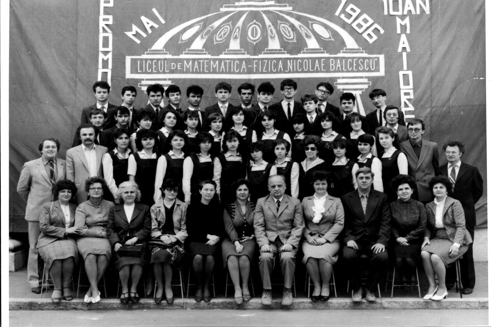
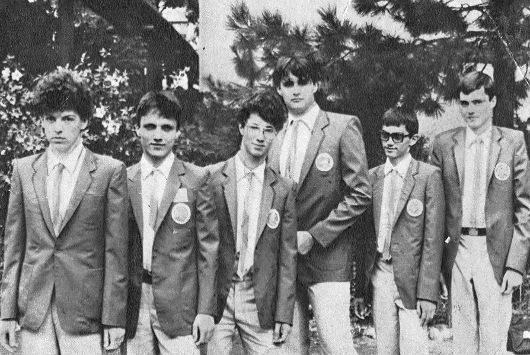
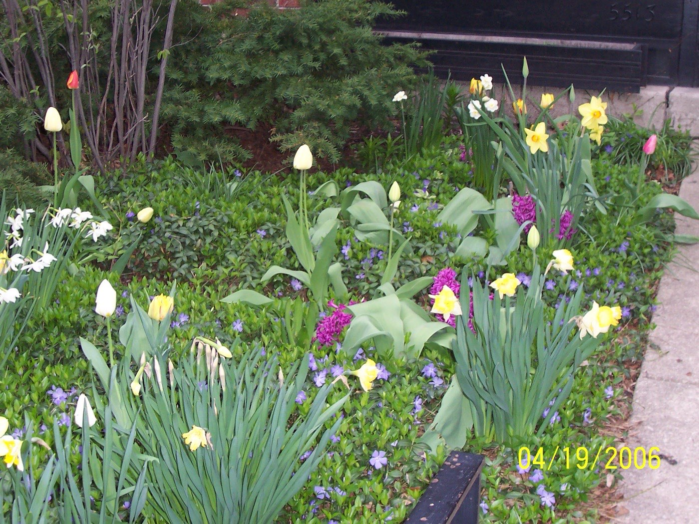
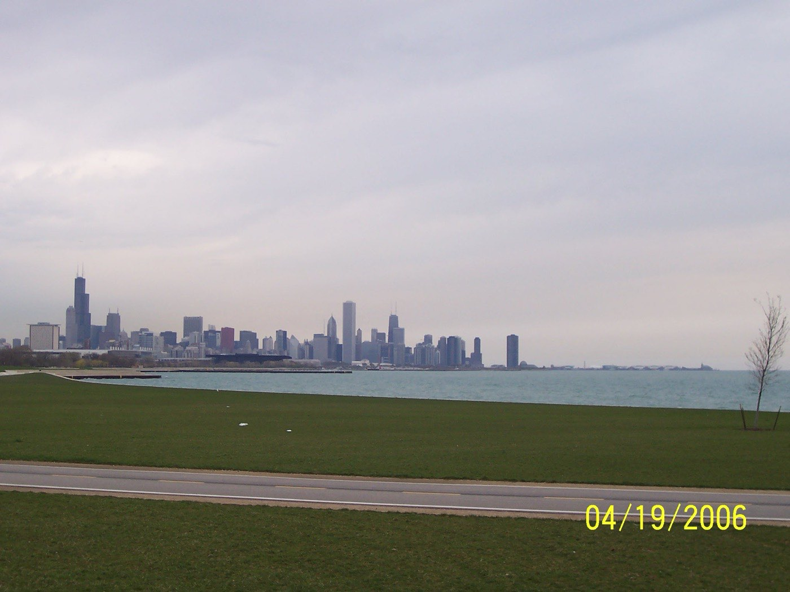

Under construction. These pages are generated from a migration of an older curriculum vitae and have not been fully verified. Entries may be incomplete, mis-dated or missing, and a hundred publications here were reconstructed from bibliographic databases rather than from the curriculum vitae itself.
Personal
-

The class graduation photograph — taken without me. I was away with the Olympiad team that day. Class of 1986 of the Carol National High School in Craiova, Romania.
-

The 1986 Romanian team, en route. A one-time aspiring Romanian mathematician, here with the 1986 Romanian Mathematical Olympiad team on our way to the International Mathematical Olympiad.
-

Not my work. I am the audience. The eternal admirer of a garden designed by my wife.
-

The view that makes the drive worth it. A commuter with a spectacular drive to work.
{kind=link}
{kind=link}
{kind=link}
{kind=link}
Favorite quotes
God might be subtle, but He is certainly not malicious.
Albert Einstein (einstein@genius.heaven.edu)He who has once tasted this fruit can never more forswear it.
Leopold Kronecker, about mathematics.There is nothing more powerful than an idea whose time has come.
Victor Hugo.When it starts moving, that's the time when you should press the hardest.
Nicu, my driving instructor, about using the clutch. Approximate translation from Romanian.